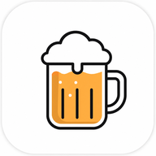
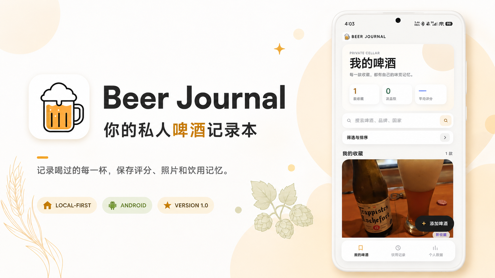
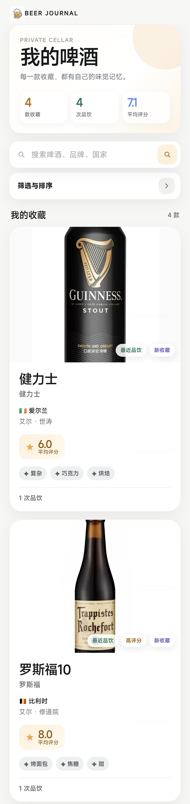
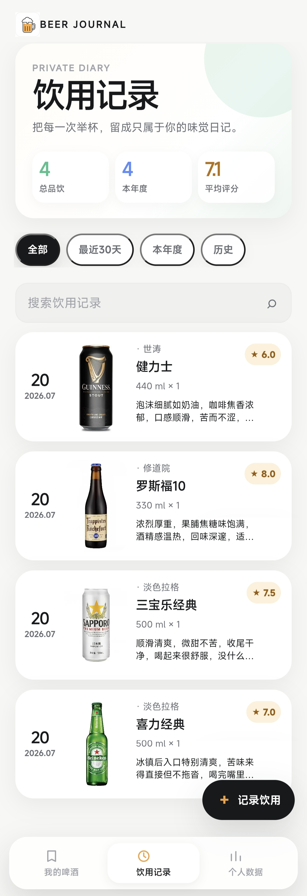
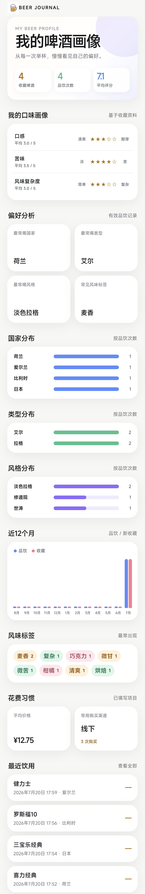
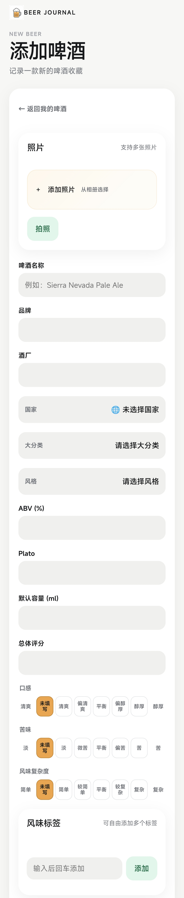
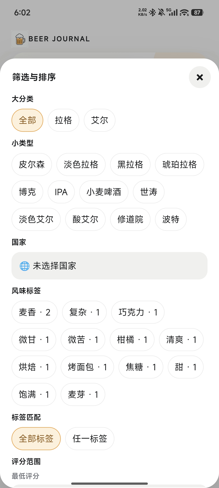

我的收藏
记录啤酒、品牌、国家、类型和评分，随时知道自己喝过什么。

Beer JournalLOCAL-FIRST · ANDROID 1.0
Beer Journal 是一款专注个人记录的本地啤酒日志 App。离线打开、离线记录，照片、标签、筛选、统计和备份都安静地留在你的手机里。
无需账号 · 默认本地保存 · 当前版本 1.0.0

KEY FEATURES
从第一款啤酒开始，慢慢建立一份不会被时间冲淡的个人味觉档案。
记录啤酒、品牌、国家、类型和评分，随时知道自己喝过什么。
用自己的风味标签整理口味，按国家、类型、评分和标签组合查找。
保存多张本地照片、设置封面，保留每次开瓶时的现场感。
查看饮用次数、瓶数、平均分、国家分布和最近的饮用记录。
APP PREVIEW
暖白背景、琥珀色按钮和圆角卡片，所有页面都为单手使用而设计。





FOR YOU
OFFLINE BY DEFAULT
不需要账号，没有云同步，也没有广告和追踪。卸载 App 或清除数据会删除本机记录，请记得定期导出 JSON。
BEER JOURNAL 1.0
v1.0.0 · 首个正式本地离线版本。现在可以记录 Beer 和 Tasting、保存照片、添加标签、组合筛选、查看统计、使用回收站，并通过 JSON 备份自己的数据。